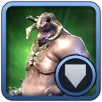

Talent
Rounds for All
Rounds for All is a level 6 talent of Brugg Ironjaw.
Rounds for All is a talent of Brugg Ironjaw, offered at player level 6 to the Barrel Roller and Innkeeper builds.
Description
Every ally gains 15 attack speed.
What it changes
Every ally in the fight when combat begins, including the commander and the units the commander summons at the start of combat: +15% attack speed. Units summoned later in the fight do not get it.
- The bonus is handed out at the start of each fight and lasts the whole fight, so the allies that received it keep it even if the commander falls.
- A talent is kept for the rest of the match.
The choice
At each talent level you are shown the options for your build and keep one. Taking Rounds for All means giving up the other option of that level for the rest of the match.
| Build | Player level | Competes with | The alternative |
|---|---|---|---|
| Barrel Roller and Innkeeper | 6 |  Unbreakable | Shrug It Off lasts 7 seconds. |
The full ladders are on the talents page; the rules are on How commanders work.